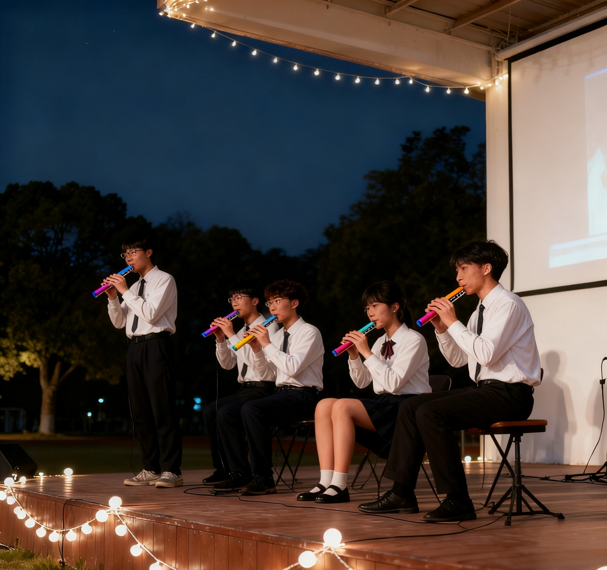

社团简介 | 活动安排 | 风采展示 | 社员故事 | 在线报名
在青春的校园里，总有一处角落，流淌着纯净而富有生命力的旋律。自2018年创立以来，校园口琴社便以其独特的魅力，成为了这样一个汇聚梦想、分享热爱的音乐港湾。我们秉持“呼吸与旋律的交融”这一核心理念，不仅将口琴视为一种乐器，更视其为一种情感的延伸、一种心灵的对话。在这里，每一个音符都承载着故事，每一次呼吸都伴随着节奏，我们共同编织着属于青春的动人乐章。
“呼吸与旋律的交融”不仅是我们社团的口号，更是我们音乐实践的基石。口琴作为一种直接由呼吸驱动的乐器，其演奏过程本身就是一次生命律动与艺术表达的结合。每一次吸气与呼气，不仅是维持生命的本能，更是塑造音乐的灵魂。我们鼓励社员在演奏中感受呼吸的节奏，体会气息的强弱变化如何影响旋律的情感色彩，从而将内心的波动、思绪的起伏，通过小小的琴身转化为打动人心的乐曲。这种理念让音乐回归本真，让表达更加贴近心灵，无论你是初窥门径的新手，还是技艺娴熟的演奏者，都能在这里找到音乐与自我最深处的连接。 我们坚信，音乐的本质在于分享与共鸣，而非技术的壁垒。因此，口琴社向所有对口琴和音乐怀有兴趣的同学敞开怀抱。无论你是对音乐一无所知的“小白”，还是拥有多年演奏经验的“大神”，这里都为你准备了展示才华、交流学习的舞台。我们深知，初学者的忐忑与憧憬，也理解资深者对于精进与创新的渴望。为此，社团建立了完善的“老成员一对一帮带”制度。每一位新加入的社员，都会匹配一位经验丰富的学长或学姐，从最基础的持琴姿势、音阶吹奏，到乐理知识的讲解，再到演奏技巧的打磨，提供耐心细致的指导。这种传承不仅体现在技艺上，更是一种社团温暖文化的延续，让每位成员都能在支持与鼓励中稳步成长。
为了满足社员不同的兴趣与发展方向，口琴社科学地设立了教学组、表演组与编曲组三大分支，让每位成员都能找到属于自己的位置，发挥独特的光彩。 如果你也热爱音乐，渴望表达，期待在旋律中找到共鸣，那么请不要犹豫，加入我们吧！让我们一起，在呼吸与旋律的交融中，奏响属于我们的时代强音，让口琴的清音，回荡在校园的每一个角落，温暖每一颗热爱生活的心。
为了让大家更好地了解口琴社的日常，本学期计划安排如下几项主要活动。 具体时间可能会根据学校统一安排略作调整，详情请关注社团通知。
| 口琴社 2025 年春季学期活动安排表 | |||
|---|---|---|---|
| 活动名称 | 活动时间 | 活动地点 | 负责人 |
| 新成员见面会 | 3 月第 1 周 周五晚 | 音乐楼 107 | 张海睿 |
| 口琴基础教学公开课 | 3 月第 2 周 周六下午 | 张归云 | |
| 校园草地音乐会 | 4 月第 2 周 周日 | 操场中部草坪 | 王荔洁 |
| 学期专场音乐会 | 6 月第 1 周 周六晚 | 礼堂 | 陈佳米 |
下面是一张往届口琴社演出照片。点击图片，可以查看更详细的活动介绍页面。

图中为上学期校园星星音乐会上，口琴社成员的合奏场景。
下面是口琴社宣传视频。
小宋大一加入口琴社时，还是一个连音阶都吹不完整的“纯小白”。面对这个握在掌心的小小乐器，她既感到新奇又有些不知所措。在社团“一对一”帮带学姐的耐心指导下，她从最基础的持琴、呼吸方法学起，一个音一个音地摸索。她坚持每天课后练习半小时，从单调的音阶到简单的《小星星》，再到流畅的旋律。一个学期后，她不仅熟练掌握了多首流行歌曲的独奏，更在社团的“星星音乐会”上，与小伙伴们完成了一场精彩的四重奏表演，从曾经的台下观众，蜕变成了舞台上自信的演奏者。
小张曾经是个不太善于表达自己的同学，在人群前说话都会感到紧张。加入口琴社后，他发现音乐是另一种强大的语言。在社团轻松友好的氛围里，大家围坐在一起练习，互相倾听彼此的进步，交流吹奏的技巧。那小小的口琴成了他情感的出口，欢快的、忧伤的、宁静的情绪，都能通过旋律倾诉。在一次社区公益演出中，他鼓起勇气，用一曲悠扬的《如果当时》打动了在场的所有听众。当掌声响起的那一刻，他不仅收获了鼓励，更在音乐中找到了前所未有的自信与平静。
对于许多社员而言，口琴社不仅仅是一个学习乐器的地方，更是一个温暖的家。在这里，他们因对口琴共同的热爱而相遇。大家一起为了一个复杂的节奏片段反复磨合，为了一个完美的和声效果而欢呼；他们会一起分享新发现的好听曲谱，也会在排练结束后相约宵夜，畅谈音乐与生活。那从琴格中流淌出的，不仅是动人的旋律，更是深厚的友谊。
请认真填写以下信息，确保联系方式准确无误。
校园口琴社 · 2025 招新网页